网上闹得纷纷扬扬的“释学诚性侵案”，昨天（8月23日）终于有了定论。面对国内外大量网友的围观，朝廷方面终于承认：举报内容属实——也就是说：中国佛教协会会长确实是个淫僧。
今天俺发一篇《每周转载》，一方面是让更多网友了解此事，另一方面也是对近期兴起的 MeToo 运动表示支持。
话说今年朝廷糗事多，再这么下去，真理部都快要招架不住了 :)
关于这个淫僧的简历，可以参见维基百科（链接在“这里”）
此人头上有相当多光环，至少包括：
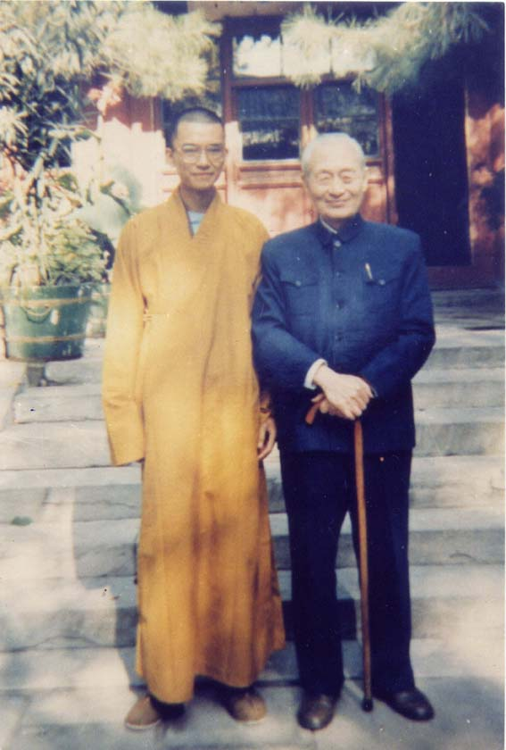
（赵朴初与年轻的释学诚合影）
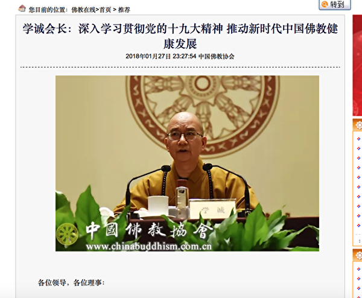
（释学诚发表讲话：深入学习贯彻党的十九大精神）
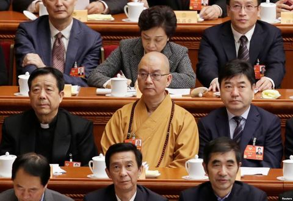
（释学诚参加两会，正襟危坐，道貌岸然）
举报人是淫僧的两位徒弟，分别是释贤启（俗名“杜启新”）、释贤佳（俗名“刘新佳”），这俩都是清华理工科博士，两人合写了一份长达95页的举报材料。这份举报材料被网友称作是【博士论文级别】——其中的条理清晰、逻辑严密、证据确凿。而且还处处引用佛教经书......
（注：举报材料的 PDF 已经上传到“俺的网盘”，放到“政治类 / 中国 / 腐败问题”目录下）
由于举报材料太长（95页），俺只列出目录部分（对应 PDF 的第 2 ~ 4 页）：
考虑到这篇举报材料很长，估计某些同学没耐心看完，俺摘录其中部分如下：
举报材料中还附上了若干微信截图作为证据（截图如下）：
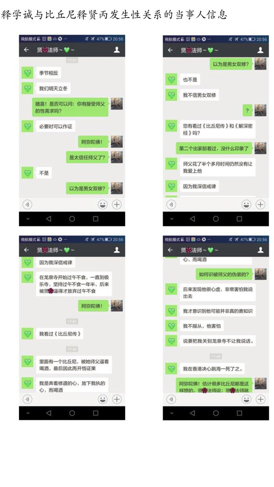
俺曾经推荐过经典影片《V怪客 / V字仇杀队》（链接在“这里”），片中 V 在杀淫棍主教之前，对主教说：
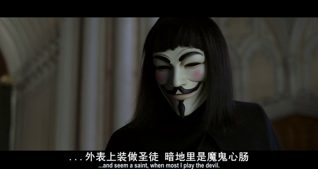
8月1日，北京龙泉寺官方发了一份《严正声明》，为彰显其牛逼，还加盖了公章。不过俺觉得这份声明是苍白无力的。
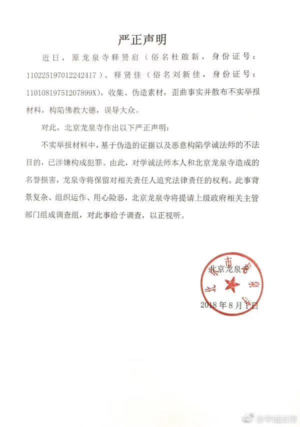
（龙泉寺官方的《严正声明》，如今已成笑柄）
在事情刚刚曝光的头几个星期，真理部【全网查删】前面提到的那份举报材料。据某些网友反馈，在微信中转发这份举报材料都会发送失败。
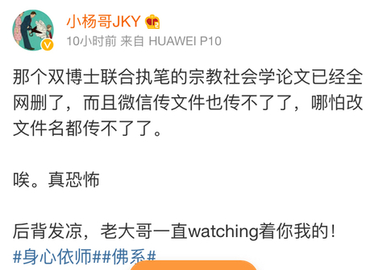
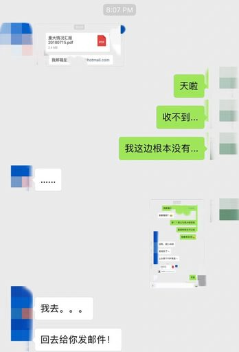
随手贴几条外媒的中文报道：
《北京龙泉寺住持被控性骚扰女弟子 @ 纽约时报》
《中国 #MeToo 蔓延至佛界 名寺方丈被指性侵弟子 @ BBC/英国广播公司》
《阿MeToo佛：龙泉寺住持被曝性侵 @ RFA/自由亚洲电台》
《为修补党的形象止血，龙泉寺住持涉嫌性侵案进入警方刑事调查 @ VOA/美国之音》
下面是一些外媒的洋文报道截图：
中国国家宗教事务局【官网】于23日发布《关于对举报学诚和北京龙泉寺有关问题的调查核实情况》（链接在“这里”）。
截止俺写本文时，释学诚很荣幸地成为“MeToo（米兔）运动”中落马的【最高级别政府官员】（官至“全国政协常委”哦）。俺不禁想问一下：党国的脸面何在？佛教界情何以堪？
mbjl✊✊✊：
推上搜索了这个举报信，下载，阅读。
大概看了看，pdf文件，95页。
——太让人震精啦！这个学诚简直就是个披着法师外衣的大流氓。
李方：
Me Too 运动来到北京龙泉寺。
这条鱼比释永信还大，释学成是中国佛教协会会长、全国政协常委，另加一大堆会长、院长、方丈。
会长都如此，中国佛教之败坏可以超度了。
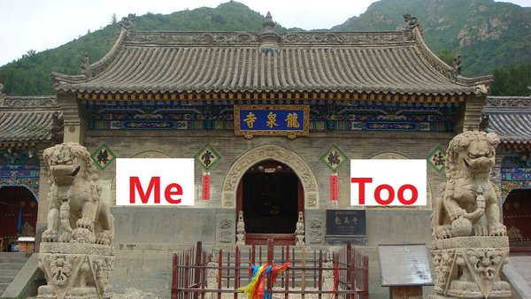
Keeny Wong(意无怠)：
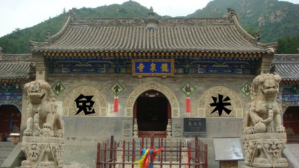
变态辣椒：
【龙泉寺方丈造像】
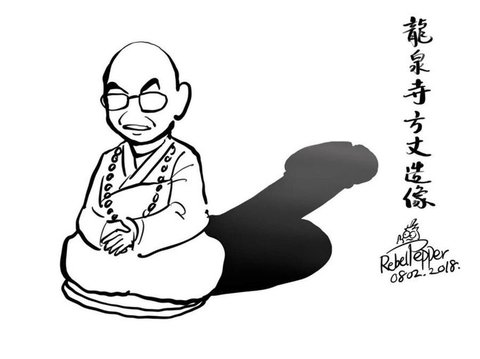
观天雨：
辣椒观察细微，把小缺口都勾勒出来了。
關堯 · Alston_kwan：
【阿metoo佛】
Tianran Ding：
整个互联网都在看那个“依师 随你了”小黄文
智能武器研究所：
一入佛门深似海
龙泉寺内把花采
安戈洛的泥土：
龙泉寺不但有宝剑，还有大保健。
JonJon：
现在明白什么是神仙樣的生活。
朱利安大王：
龙泉寺举报主持方丈的文件的目录一览...
首先是服
其次是服
最后，龙泉寺的性侵系统好完整！
摩利亚山：
北京龙泉寺，就是那个有很多硕士博士出家的寺院吧？
看来花和尚也爱“知性、熟女”，和党的干部一样嘛！
驭风老道：
莫怪贫僧太放纵，只怪师太太水灵～😻
老魏：
美女床上渡
佛祖心中留
宫本黑支：
当和尚真好啊，还可以跟女弟子双修！
田田：
人有性欲是正常的，还俗即可；
但欺世盗名玷污清净地，就罪过了。
【没有共产党就没有如来佛】

陈维健：
释学诚是一个政治和尚，商业和尚，更是一个花和尚。
这是中共把真正的佛教灭绝后，扶植培养【党和尚】的必然结果。
中国所谓的佛界，已经是中共肮脏政治的一部分。
魔王波旬曾对佛祖说：到了末法时期，我叫我的徒子徒孙混入你的僧室，穿上你的袈裟，破坏你的佛法，曲解你的经典，破坏你的戒律。
现在正是如此。
小婷：
〝穿僧袍的邪魔〞如何成为佛教协会会长？
中共宗教事务管理局周四称，已经对中共佛教协会会长释学诚的性丑闻启动调查。举报人也表示已经递交更多新证据。
而这样一名和尚是怎样成为中共佛教协会会长的？释学诚如何成为中国〝最高端的和尚〞也引发关注。
Dayin Ma：
佛教协会会长一直由党员担任，所以不像天主教等有地下教会的出现，此外还有梵蒂冈等头疼的外交问题。
mountain：
学诚不是佛教协会会长吗? 应该算副部级吧。
如果属实，共党领导下的佛官不清净也正常。
民主必勝：
此淫僧果然党姓十足，貫撤邪共姦淫攎掠滿口仁義道德的作風，有資格入選邪共中央委員！
蔡福生：
要明白佛教协会它已经是一个组织了
梨花月：
共产党选这些全国会长什么的，不是看修持本领，而是看态度和倾向，适不适合信手捏来，是不是听话···
zhouzilong：
学诚——龙泉寺党支部书记
宣和景行：
这大和尚真不愧为组织上的人，连个人嗜好都向党中央领导看齐。
挚爱中华：
土共又被自己培养的假和尚打脸了！
艾克：
清华博士的文笔果然严谨，但如果只是犯了色戒，不涉及经济问题，恐怕这事最后不了了之。
佛教内部相当封闭，门户之见很深，学诚位高权重，胆敢提供证据的人最后肯定要被赶出寺庙。
如果真的给做掉，恐怕也不是不可能。
Cai Chu：
2018年2月17日，北京春节庆祝中国农历新年期间，一个男孩在八大处公园的一座佛教寺庙拜佛。
佛教在中国广为流传，寺庙、佛像和僧人众多。
但近年来，网上大量视频、图片和消息显示，本应是佛门净地的许多中国寺院变成“摇钱树”。
许多僧人出入乘坐豪车，美酒美女相伴，加上大批“假和尚”行骗，令佛门浑浊。
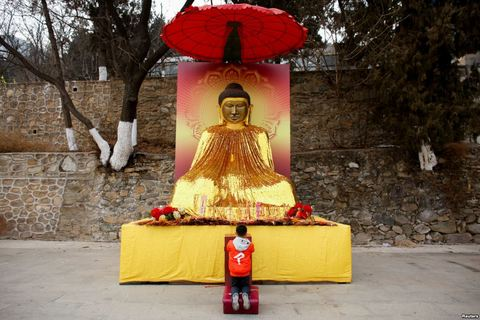
Tony：
在统一意识形态下已经没有什么宗教可言了。
NOVA ECHO ROMEO ALPHA：
你国佛教就是大粪坑的维稳先锋。
现在共匪治下，没有多少正信了，倒是学诚、永信带头过上了性生活。
这也叫能佛教？那只配一个我呸。🙃
兔子芝士：
党的和尚，也不过是带了一张装疯卖傻的小丑面具。
表面上说说自己的道义，实质上就是社会的败类。
朱文中：
大陆的佛教堕落到十八层地狱了。
就这德行怎么能超度众生，超度自己的花和尚吧！
缘布施：
中共统治下的和尚没有一个真学佛的，但凡学进去一点佛法，都知道因果报应。
佛法成了它们搂钱的工具，佛教成了吓唬人掏钱的工具，韦驮菩萨以后一定会将这些假和尚头颅敲碎……
乔哲：
你们不要“妄议”中国特色的佛教。不好色，怎么成为中国特色？
在共产共妻党的阴民领导下，中国特色的佛教沦为共产共妻教！
自由的 马：
这哪里还是佛门圣地，是披着佛牌的一群骗子！
David Sun：
佛祖还是那个好佛祖，菩萨还是那个好菩萨，可和尚尼姑都成了党员，什么世道！
夕曛：
真精彩！出家人的世界
Lanson：
佛教的耻辱。
Gao：
是他自己的耻辱。
那两位年轻僧侣是真正的大护法，佛教界的希望。
千户锦衣卫：
淫僧释学诚今日辞去佛教协会会长一职，目前在一个小院闭门思过。他还将辞去全国政协常委等职务...
很奇怪中共的法律：明明犯了诱奸、强奸还有违反佛教戒规等罪行，为什么辞去相关职务后可以不被刑拘、被判刑？
文璇：
连辞职都是骗人的，过几天换个其他部门继续当官。
对中共来说“玩几天娘们算什么，只有政治错误才是错误”。
中共官员几乎不是贪官就是淫棍，都是五毒俱全的流氓。
艾克：
这么严重的违反寺规，居然以辞职了事，真是无耻啊。
宣和景行：
这个级别的干部，组织上要保的。
不群不党：
正部级花和尚，当然要保护！
Red Fire Age：
为什么不获刑？
想必他是个共产党员，党员都有两条生命，政治生命和肉身生命。
看来贼秃的政治生命算是玩完了，狗命还能有多长，就要看其造化了
耶熊吧二大爺：
原來對強姦犯的最高懲罰是閉門思過安度晚年…
還是社會主義好！
samuel yu：
刑不上方丈
逍遥吃瓜客：
肯定安排个小尼姑一起闭门思过😅
高瑜：
震驚中外的龙泉寺性侵案公佈了調查結果。這位中國頭號“花和尚”送到福州一间小寺院【闭门思过】。
中国佛教协会15日召开理事会议，接受学诚辞去会长一职。学诚还将辞去中国全国政协常委等社会职务。
按照“支部建在廟裏”的隱性規定，他竟然榮獲總書記習近平的八字贈言【努力忏悔，安度余年】。
算得雖花猶榮。
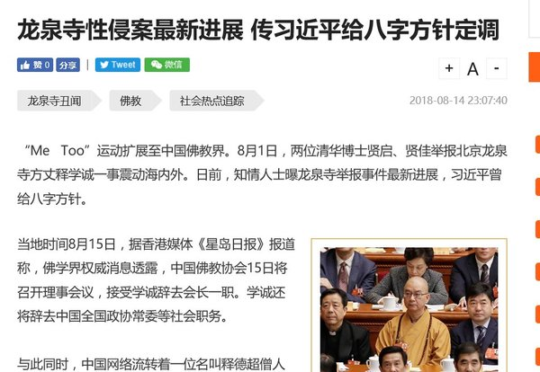
Rick：
“安度余年”的意思是“不让查了放过他”吗？
烟灰：
八字赠言能证实吗？如果是真，那么习还真是个猪头
王老吉：
此淫僧曝光于世人，有干系者撇清都来不及呢。
习竟然还临别赠言，此乃过命的交情。
Jim Mah：
真的有点像，就差后面加上“钦此”
挪威的森林：
一个部级和尚，竞因玩弄了几个女弟子被罢官去职发配原籍，心里不服啊。
都是党国忠诚之士，有哪个部级干部因玩几个女下属落得如此下场的？
包子帝当然得宽慰一下他嘛。
陈维健：
花和尚学诚倒台闭门思过，释出二个信息：
习近平的赠言，显示习是他的靠山。另一个是；释学诚确实姓党不姓释，他是中共党员。
如果按党纪处理，应该进秦城，如果按戒律处置，应该下地狱。习近平一句赠言，怎么就让他逃脱了呢。
不过他逃脱得了世间和惩罚，但逃脱不了佛界的报应。
Ablueriver：
这货和习在福建就勾搭上了，有习当保护伞。
如果不是丑事闹太大，还会继续当国师。
张晨：
这个龙泉寺住持的提拔可能和习近平有关。
当年习近平在福建做官很喜欢去寺庙，而这个住持也在那段时间快速晋升。
NOVA ECHO ROMEO ALPHA：
据说是习近平包庇此破戒淫僧
yehu4001：
因為有了偉大領袖的加持。
小王子：
习近平的又一枚猪队友，猪真的只配和猪交朋友。
80下中知：
原来是某某的拜把兄弟，那就多多关照了！
上面的花花，下面的不花花也难！
土国大限到了，乌七八糟的事儿多了去了！
共青团中央 宇宙支部：
是不是给高官夫人开过光？
清风不识字何事乱翻书：
是谁求得包子法外施恩，闭门思过？
是彭？是梦？是谁？！！
scala：
大胆想象——习公主会不会是死秃驴的种？
Leo Jay：
别信佛了，信习近平吧！
小王子：
是不是和尚强奸不用负刑事责任？那和尚都可以随便强奸了。
不对！只有习总的和尚队友才有如此特权，其他人还是消停点吧！
李方：
释学诚原来是“莆田系”：
释学诚福建莆田市仙游县赖店镇罗峰村人。众所周知，莆田人在全国到处承包医院和寺庙，商业化经营，良心的不要。
释学诚也经营着一个集团公司：北京龙泉寺、陕西法门寺、莆田广化寺，他是方丈兼董事长。
同时还是中国佛教协会会长，全国假和尚的董事长。
neo2100v：
假医疗图财害命，混乱佛法诈骗香火钱，（莆田系）死罪难逃。
Hawolbai：
我看他是“延安系”，共產公妻，是個黨員，臥底，生殖器治廟。
Richard cz
我对福建佛门的势力，那是深有体会。
行者：
莆田，造假中心啊！
黄飞
福建人脑子好用，从高仿到莆田系资源，再到整个东南亚基本是福建泉州附近那些人在搞网络赌博，毁了多少家庭。
但是这都是损人利己的行为而已，我对福建人不感冒，实话，虽然还是好人多。
OraclMachine：
贤启大师心思之缜密…
给公安的举报信是A4排版，而这篇自述都是针对移动设备阅读体验而优化排版的，为了达到最大的传播效果。
https://t.co/zD2U05o20H
安替：
看来龙泉寺找一些清华工程博士出家是战略错误啊！这些博士智力和道德都很高，不好骗，终于把方丈释学诚在米兔运动中举报了。
而举报的 pdf 一看就是 LaTex 生成的，忒他妈专业了。
（编程随想注：安替的判断有误，PDF 不是 Latex 生成，而是 Word 生成）
花小楼：
哎呦我靠！！！真不愧是清华博士写的。
Malcolm Ke Win：
写得非常在理啊，佛界人才！
但是每一条都要引用佛教经典很累啊！佛教徒们有没有勇气搞改革由僧众选举自己的领袖？
Kayla：
关注学诚法师的微博好几年，刚看到他被举报性侵时，直觉告诉我此事必有蹊跷。
大概看了下那份95页的举报材料后，就已经可以肯定学诚法师被恶意构陷了。
这件事再次证明群众的眼睛大部分是瞎的。网民只咬住相关信息被屏蔽这一点认为学诚心虚，是 Naive。
水滸伝：
藏传的密宗不禁欲，称为“双修”。
女施主可通过与喇嘛性交获得修行功力。是受到鼓励的行为。
喇嘛教规定双修对象必须在八岁到47岁之间的女性，超过47岁的女人被认为有毒了。
实修实证，自性自度：
他是帮女弟子开悟，是普渡众生！善莫大焉！🙏
慈悲和平：
个人直觉，与当年组团构陷少林寺永信法师异曲同工。不诤论，清者自清。
土豆泥：
别胡扯，学成法师是被污蔑的，天天发些垃圾谣言信息。
Cory Norman：
整个社会点点滴滴都如此不堪！！！
等不易：
天下乌鸦一般黑啊，才看完欧美教会主教玩儿娃儿屁眼，就看到老和尚玩儿居士了。
还是唯物主义理论实在啊，直接告诉你社会就是吃人和被吃。
Wucari：
国外宗教装逼忙，国内宗教忙操逼。
在本文的结尾，俺再分享《V怪客 / V字仇杀队》影片中 V 的另一句台词：
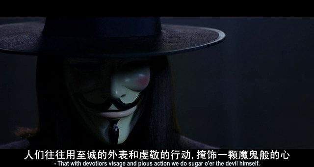
想想朝堂之上那些道貌岸然的高官，大都如此。
俺博客上，和本文相关的帖子（需翻墙）：
《分析“制度性腐败”——为啥天朝的贪官屡禁不止？》
《每周转载：关于＜编译局言情录＞的电子书、网文、网友评论》
《每周转载：关于雷政富(网文4篇，评论若干，图片若干)》
《每周转载：超级富豪王振华性侵9岁女童（大量网友评论，多图）》
《每周转载：汇总未成年人被性侵被嫖宿的案件（38起，附图）》
今天俺发一篇《每周转载》，一方面是让更多网友了解此事，另一方面也是对近期兴起的 MeToo 运动表示支持。
话说今年朝廷糗事多，再这么下去，真理部都快要招架不住了 :)
★【淫僧】释学诚其人
关于这个淫僧的简历，可以参见维基百科（链接在“这里”）
此人头上有相当多光环，至少包括：
中国佛教协会会长了解天朝官场的同学，多半能猜到——此人必有后台。根据外媒爆料：
中国宗教学会副会长
全国政协常委
全国政协民族和宗教委员会副主任
中国佛学院院长
中国宗教界和平委员会常务副主席
北京龙泉寺方丈
福建莆田广化寺方丈
陕西扶风法门寺方丈
......
释学诚仕途发迹的后台是曾长期把持佛教界的【赵朴初】。
1988年，福建莆田广化寺方丈毅然法师退居，赵朴初“力排众议”，举荐仍在学习中的释学诚担任住持，年仅23岁的释学诚成了当时年纪最轻的名寺方丈。
1989年释学诚又被任命为中佛协副秘书长，当时的中佛协会长、中国佛学院院长仍是赵朴初。
（赵朴初与年轻的释学诚合影）
（释学诚发表讲话：深入学习贯彻党的十九大精神）
（释学诚参加两会，正襟危坐，道貌岸然）
★举报释学诚的长篇揭发材料——号称【博士论文级】
举报人是淫僧的两位徒弟，分别是释贤启（俗名“杜启新”）、释贤佳（俗名“刘新佳”），这俩都是清华理工科博士，两人合写了一份长达95页的举报材料。这份举报材料被网友称作是【博士论文级别】——其中的条理清晰、逻辑严密、证据确凿。而且还处处引用佛教经书......
（注：举报材料的 PDF 已经上传到“俺的网盘”，放到“政治类 / 中国 / 腐败问题”目录下）
由于举报材料太长（95页），俺只列出目录部分（对应 PDF 的第 2 ~ 4 页）：
目录
一、性骚扰短信带来的发现
(一)释学诚向多位出家女弟子发出性骚扰短信
1.比丘尼释贤甲(化名)的求助
2.性骚扰短信被证实
(二)释学诚性侵多位出家女弟子的证据
1.短信证据
2.微信证据
3.比丘尼释贤丙(化名)向僧团举报和派出所报案
(三)戒律允许男法师收出家女弟子吗
1.佛教律典的依据
2.女弟子僧团是如何成立的
3.欺骗女弟子,使之非法受戒
(四)出家女弟子是释学诚高调国际弘法的主力
二、为何出家女弟子被突破道德底线
(一)龙泉寺系统的精神控制
1.与家人、朋友的隔离
2.电话和网络控制
3.龙泉寺系统的僧人了解外界的渠道有限
4.行为控制
5.利用弟子信任,获得个人隐私
(二)对女众僧团的远程控制
(三)出家女弟子的佛教教理基础薄弱
1.忙于“事业”,无暇学修
2.师资欠缺,引导偏失
(四)“男女双修”之谜
(五)淫秽短信的惊人用途:精神控制
1.利用女弟子的心理弱势
2.以“性”为核心的精神控制
3.借“修法”谈“淫欲”
(六)影响深远的精神迫害
三、龙泉寺的违章建设
(一)佛弟子建造房屋应遵守的佛教戒律
1.遵守国家法律
2.土地不得有争议
(二)龙泉寺违章建设的历史
(三)龙泉寺违章建筑的社会危害
1.对人身的伤害
2.建筑的安全隐患
3.对信众捐赠的浪费
4.制造抗法恶性事件
5.对全国宗教场所的负面影响
6.对佛教声誉的损坏
四、巨额资金去向不明
(一)1200 万元去向不明
(二)1000 万元流入个人账户
(三)肆意挪用僧团资金
五、呼吁
(一)挽救邪师释学诚
(二)完善信教群众的权利保障体系
附件
附件一 比丘尼释贤甲(化名)的遗嘱
附件二 淫秽短信摘录
附件三 汉地佛教大德认为男女双修法不符佛法
附件四 比丘尼释贤甲(化名)与释学诚短信互动始末
附件五 财务信息
考虑到这篇举报材料很长，估计某些同学没耐心看完，俺摘录其中部分如下：
我们通过律师咨询了国家公安部、最高人民检察院的技术侦查部和移动通讯的技术主管。专家们一致回复：目前不存在盗号和伪机站入侵的可能，入侵服务器并更改记录更是天方夜谭，司法系统以服务器记录的信息为有效法律证据。当时的我们都不相信释学诚会做出这种无聊的事情。为弄清真相，找到真凶，我们通过法律程序，取得相关的释学诚手机短信记录。
然而，短信记录不仅粉碎了我们的预想，更给我们带来无比震惊的事实：在 2017 年 12 月底至 2018 年 2 月初的手机短信记录中，除贤甲外,释学诚还同时与极乐寺其他 5 位出家女弟子有着男女性话题的短信交流（详见附件二《淫秽短信摘录》）。
确实如贤甲所说,在短信互动中,释学诚诱导或胁迫出家女弟子突破道德和戒律上的心理防线,让她们答应其性需求。不同女弟子的对话程度深浅不一，其中 4 位女弟子或顺从、或经历犹疑挣扎，终究答应了释学诚的性需求；另外 2 位女弟子的警惕和防御相对强一些，但面对不息不饶的短信，她们的立场也开始产生动摇。
举报材料中还附上了若干微信截图作为证据（截图如下）：
俺曾经推荐过经典影片《V怪客 / V字仇杀队》（链接在“这里”），片中 V 在杀淫棍主教之前，对主教说：
外表装圣徒，内心是魔鬼。这句话用来描述【淫僧释学诚】，还挺贴切的哦。
★释学诚的反击——苍白无力
8月1日，北京龙泉寺官方发了一份《严正声明》，为彰显其牛逼，还加盖了公章。不过俺觉得这份声明是苍白无力的。
（龙泉寺官方的《严正声明》，如今已成笑柄）
★真理部尝试封杀丑闻
在事情刚刚曝光的头几个星期，真理部【全网查删】前面提到的那份举报材料。据某些网友反馈，在微信中转发这份举报材料都会发送失败。
★天朝佛教界惨遭外媒围观
随手贴几条外媒的中文报道：
《北京龙泉寺住持被控性骚扰女弟子 @ 纽约时报》
《中国 #MeToo 蔓延至佛界 名寺方丈被指性侵弟子 @ BBC/英国广播公司》
《阿MeToo佛：龙泉寺住持被曝性侵 @ RFA/自由亚洲电台》
《为修补党的形象止血，龙泉寺住持涉嫌性侵案进入警方刑事调查 @ VOA/美国之音》
下面是一些外媒的洋文报道截图：
| 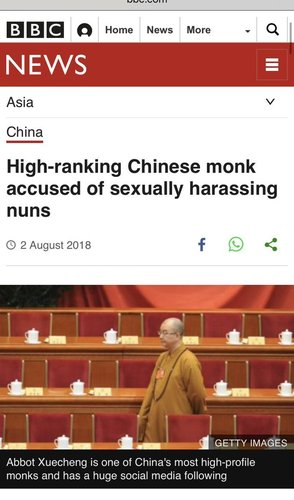 | |
| 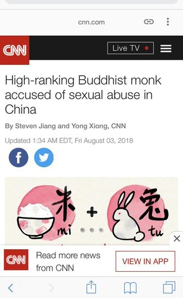 | 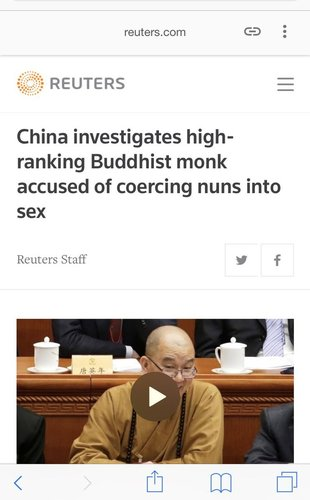 |
★天朝官方（国家宗教事务局）的定性——正式宣告淫僧垮台
中国国家宗教事务局【官网】于23日发布《关于对举报学诚和北京龙泉寺有关问题的调查核实情况》（链接在“这里”）。
第一，举报材料中反映学诚发送骚扰信息问题，经查属实，涉嫌违反佛教戒律，已责成中国佛教协会按照佛教教义教规和《中国佛教协会章程》严肃处理。
第二，对举报材料中反映北京龙泉寺违章建筑问题进行了调查，现已查明，所举报的建筑，未依法取得建设工程规划许可证，地方有关部门正在深入调查取证，将依法作出处理。
第三，对举报材料中反映北京龙泉寺大额资金去向问题，经调查，涉嫌违反国家财务管理有关规定，已交由地方有关部门依法依规查处。
第四，对举报材料提及的向公安机关报案有关性侵问题，北京市公安机关依照《公安机关办理刑事案件程序规定》进行受理、初查工作，现正在调查中。
截止俺写本文时，释学诚很荣幸地成为“MeToo（米兔）运动”中落马的【最高级别政府官员】（官至“全国政协常委”哦）。俺不禁想问一下：党国的脸面何在？佛教界情何以堪？
★网友评论：调侃“龙泉寺”与“释学诚”
mbjl✊✊✊：
推上搜索了这个举报信，下载，阅读。
大概看了看，pdf文件，95页。
——太让人震精啦！这个学诚简直就是个披着法师外衣的大流氓。
李方：
Me Too 运动来到北京龙泉寺。
这条鱼比释永信还大，释学成是中国佛教协会会长、全国政协常委，另加一大堆会长、院长、方丈。
会长都如此，中国佛教之败坏可以超度了。
Keeny Wong(意无怠)：
变态辣椒：
【龙泉寺方丈造像】
观天雨：
辣椒观察细微，把小缺口都勾勒出来了。
關堯 · Alston_kwan：
【阿metoo佛】
Tianran Ding：
整个互联网都在看那个“依师 随你了”小黄文
智能武器研究所：
一入佛门深似海
龙泉寺内把花采
安戈洛的泥土：
龙泉寺不但有宝剑，还有大保健。
JonJon：
现在明白什么是神仙樣的生活。
朱利安大王：
龙泉寺举报主持方丈的文件的目录一览...
首先是服
其次是服
最后，龙泉寺的性侵系统好完整！
摩利亚山：
北京龙泉寺，就是那个有很多硕士博士出家的寺院吧？
看来花和尚也爱“知性、熟女”，和党的干部一样嘛！
驭风老道：
莫怪贫僧太放纵，只怪师太太水灵～😻
老魏：
美女床上渡
佛祖心中留
宫本黑支：
当和尚真好啊，还可以跟女弟子双修！
田田：
人有性欲是正常的，还俗即可；
但欺世盗名玷污清净地，就罪过了。
★网友评论：在天朝，连佛教都已经【党化】
【没有共产党就没有如来佛】
陈维健：
释学诚是一个政治和尚，商业和尚，更是一个花和尚。
这是中共把真正的佛教灭绝后，扶植培养【党和尚】的必然结果。
中国所谓的佛界，已经是中共肮脏政治的一部分。
魔王波旬曾对佛祖说：到了末法时期，我叫我的徒子徒孙混入你的僧室，穿上你的袈裟，破坏你的佛法，曲解你的经典，破坏你的戒律。
现在正是如此。
小婷：
〝穿僧袍的邪魔〞如何成为佛教协会会长？
中共宗教事务管理局周四称，已经对中共佛教协会会长释学诚的性丑闻启动调查。举报人也表示已经递交更多新证据。
而这样一名和尚是怎样成为中共佛教协会会长的？释学诚如何成为中国〝最高端的和尚〞也引发关注。
Dayin Ma：
佛教协会会长一直由党员担任，所以不像天主教等有地下教会的出现，此外还有梵蒂冈等头疼的外交问题。
mountain：
学诚不是佛教协会会长吗? 应该算副部级吧。
如果属实，共党领导下的佛官不清净也正常。
民主必勝：
此淫僧果然党姓十足，貫撤邪共姦淫攎掠滿口仁義道德的作風，有資格入選邪共中央委員！
蔡福生：
要明白佛教协会它已经是一个组织了
梨花月：
共产党选这些全国会长什么的，不是看修持本领，而是看态度和倾向，适不适合信手捏来，是不是听话···
zhouzilong：
学诚——龙泉寺党支部书记
宣和景行：
这大和尚真不愧为组织上的人，连个人嗜好都向党中央领导看齐。
挚爱中华：
土共又被自己培养的假和尚打脸了！
艾克：
清华博士的文笔果然严谨，但如果只是犯了色戒，不涉及经济问题，恐怕这事最后不了了之。
佛教内部相当封闭，门户之见很深，学诚位高权重，胆敢提供证据的人最后肯定要被赶出寺庙。
如果真的给做掉，恐怕也不是不可能。
Cai Chu：
2018年2月17日，北京春节庆祝中国农历新年期间，一个男孩在八大处公园的一座佛教寺庙拜佛。
佛教在中国广为流传，寺庙、佛像和僧人众多。
但近年来，网上大量视频、图片和消息显示，本应是佛门净地的许多中国寺院变成“摇钱树”。
许多僧人出入乘坐豪车，美酒美女相伴，加上大批“假和尚”行骗，令佛门浑浊。
Tony：
在统一意识形态下已经没有什么宗教可言了。
NOVA ECHO ROMEO ALPHA：
你国佛教就是大粪坑的维稳先锋。
现在共匪治下，没有多少正信了，倒是学诚、永信带头过上了性生活。
这也叫能佛教？那只配一个我呸。🙃
兔子芝士：
党的和尚，也不过是带了一张装疯卖傻的小丑面具。
表面上说说自己的道义，实质上就是社会的败类。
朱文中：
大陆的佛教堕落到十八层地狱了。
就这德行怎么能超度众生，超度自己的花和尚吧！
缘布施：
中共统治下的和尚没有一个真学佛的，但凡学进去一点佛法，都知道因果报应。
佛法成了它们搂钱的工具，佛教成了吓唬人掏钱的工具，韦驮菩萨以后一定会将这些假和尚头颅敲碎……
乔哲：
你们不要“妄议”中国特色的佛教。不好色，怎么成为中国特色？
在共产共妻党的阴民领导下，中国特色的佛教沦为共产共妻教！
自由的 马：
这哪里还是佛门圣地，是披着佛牌的一群骗子！
David Sun：
佛祖还是那个好佛祖，菩萨还是那个好菩萨，可和尚尼姑都成了党员，什么世道！
夕曛：
真精彩！出家人的世界
Lanson：
佛教的耻辱。
Gao：
是他自己的耻辱。
那两位年轻僧侣是真正的大护法，佛教界的希望。
★网友评论：东窗事发后，释学诚辞没有刑拘，仅仅【闭门思过】
千户锦衣卫：
淫僧释学诚今日辞去佛教协会会长一职，目前在一个小院闭门思过。他还将辞去全国政协常委等职务...
很奇怪中共的法律：明明犯了诱奸、强奸还有违反佛教戒规等罪行，为什么辞去相关职务后可以不被刑拘、被判刑？
文璇：
连辞职都是骗人的，过几天换个其他部门继续当官。
对中共来说“玩几天娘们算什么，只有政治错误才是错误”。
中共官员几乎不是贪官就是淫棍，都是五毒俱全的流氓。
艾克：
这么严重的违反寺规，居然以辞职了事，真是无耻啊。
宣和景行：
这个级别的干部，组织上要保的。
不群不党：
正部级花和尚，当然要保护！
Red Fire Age：
为什么不获刑？
想必他是个共产党员，党员都有两条生命，政治生命和肉身生命。
看来贼秃的政治生命算是玩完了，狗命还能有多长，就要看其造化了
耶熊吧二大爺：
原來對強姦犯的最高懲罰是閉門思過安度晚年…
還是社會主義好！
samuel yu：
刑不上方丈
逍遥吃瓜客：
肯定安排个小尼姑一起闭门思过😅
★网友评论：大伙儿怀疑【习近平】是花和尚的后台
高瑜：
震驚中外的龙泉寺性侵案公佈了調查結果。這位中國頭號“花和尚”送到福州一间小寺院【闭门思过】。
中国佛教协会15日召开理事会议，接受学诚辞去会长一职。学诚还将辞去中国全国政协常委等社会职务。
按照“支部建在廟裏”的隱性規定，他竟然榮獲總書記習近平的八字贈言【努力忏悔，安度余年】。
算得雖花猶榮。
Rick：
“安度余年”的意思是“不让查了放过他”吗？
烟灰：
八字赠言能证实吗？如果是真，那么习还真是个猪头
王老吉：
此淫僧曝光于世人，有干系者撇清都来不及呢。
习竟然还临别赠言，此乃过命的交情。
Jim Mah：
真的有点像，就差后面加上“钦此”
挪威的森林：
一个部级和尚，竞因玩弄了几个女弟子被罢官去职发配原籍，心里不服啊。
都是党国忠诚之士，有哪个部级干部因玩几个女下属落得如此下场的？
包子帝当然得宽慰一下他嘛。
陈维健：
花和尚学诚倒台闭门思过，释出二个信息：
习近平的赠言，显示习是他的靠山。另一个是；释学诚确实姓党不姓释，他是中共党员。
如果按党纪处理，应该进秦城，如果按戒律处置，应该下地狱。习近平一句赠言，怎么就让他逃脱了呢。
不过他逃脱得了世间和惩罚，但逃脱不了佛界的报应。
Ablueriver：
这货和习在福建就勾搭上了，有习当保护伞。
如果不是丑事闹太大，还会继续当国师。
张晨：
这个龙泉寺住持的提拔可能和习近平有关。
当年习近平在福建做官很喜欢去寺庙，而这个住持也在那段时间快速晋升。
NOVA ECHO ROMEO ALPHA：
据说是习近平包庇此破戒淫僧
yehu4001：
因為有了偉大領袖的加持。
小王子：
习近平的又一枚猪队友，猪真的只配和猪交朋友。
80下中知：
原来是某某的拜把兄弟，那就多多关照了！
上面的花花，下面的不花花也难！
土国大限到了，乌七八糟的事儿多了去了！
共青团中央 宇宙支部：
是不是给高官夫人开过光？
清风不识字何事乱翻书：
是谁求得包子法外施恩，闭门思过？
是彭？是梦？是谁？！！
scala：
大胆想象——习公主会不会是死秃驴的种？
Leo Jay：
别信佛了，信习近平吧！
小王子：
是不是和尚强奸不用负刑事责任？那和尚都可以随便强奸了。
不对！只有习总的和尚队友才有如此特权，其他人还是消停点吧！
★网友评论：又见【莆田系】
李方：
释学诚原来是“莆田系”：
释学诚福建莆田市仙游县赖店镇罗峰村人。众所周知，莆田人在全国到处承包医院和寺庙，商业化经营，良心的不要。
释学诚也经营着一个集团公司：北京龙泉寺、陕西法门寺、莆田广化寺，他是方丈兼董事长。
同时还是中国佛教协会会长，全国假和尚的董事长。
neo2100v：
假医疗图财害命，混乱佛法诈骗香火钱，（莆田系）死罪难逃。
Hawolbai：
我看他是“延安系”，共產公妻，是個黨員，臥底，生殖器治廟。
Richard cz
我对福建佛门的势力，那是深有体会。
行者：
莆田，造假中心啊！
黄飞
福建人脑子好用，从高仿到莆田系资源，再到整个东南亚基本是福建泉州附近那些人在搞网络赌博，毁了多少家庭。
但是这都是损人利己的行为而已，我对福建人不感冒，实话，虽然还是好人多。
★网友评论：举报材料堪比博士论文
OraclMachine：
贤启大师心思之缜密…
给公安的举报信是A4排版，而这篇自述都是针对移动设备阅读体验而优化排版的，为了达到最大的传播效果。
https://t.co/zD2U05o20H
安替：
看来龙泉寺找一些清华工程博士出家是战略错误啊！这些博士智力和道德都很高，不好骗，终于把方丈释学诚在米兔运动中举报了。
而举报的 pdf 一看就是 LaTex 生成的，忒他妈专业了。
（编程随想注：安替的判断有误，PDF 不是 Latex 生成，而是 Word 生成）
花小楼：
哎呦我靠！！！真不愧是清华博士写的。
Malcolm Ke Win：
写得非常在理啊，佛界人才！
但是每一条都要引用佛教经典很累啊！佛教徒们有没有勇气搞改革由僧众选举自己的领袖？
★网友评论：也有人替释学诚辩护，这些是脑残还是五毛？
Kayla：
关注学诚法师的微博好几年，刚看到他被举报性侵时，直觉告诉我此事必有蹊跷。
大概看了下那份95页的举报材料后，就已经可以肯定学诚法师被恶意构陷了。
这件事再次证明群众的眼睛大部分是瞎的。网民只咬住相关信息被屏蔽这一点认为学诚心虚，是 Naive。
水滸伝：
藏传的密宗不禁欲，称为“双修”。
女施主可通过与喇嘛性交获得修行功力。是受到鼓励的行为。
喇嘛教规定双修对象必须在八岁到47岁之间的女性，超过47岁的女人被认为有毒了。
实修实证，自性自度：
他是帮女弟子开悟，是普渡众生！善莫大焉！🙏
慈悲和平：
个人直觉，与当年组团构陷少林寺永信法师异曲同工。不诤论，清者自清。
土豆泥：
别胡扯，学成法师是被污蔑的，天天发些垃圾谣言信息。
★网友的其它评论
Cory Norman：
整个社会点点滴滴都如此不堪！！！
等不易：
天下乌鸦一般黑啊，才看完欧美教会主教玩儿娃儿屁眼，就看到老和尚玩儿居士了。
还是唯物主义理论实在啊，直接告诉你社会就是吃人和被吃。
Wucari：
国外宗教装逼忙，国内宗教忙操逼。
★结尾
在本文的结尾，俺再分享《V怪客 / V字仇杀队》影片中 V 的另一句台词：
人们往往用至诚的外表和虔敬的行动，来掩饰一颗魔鬼般的心。
想想朝堂之上那些道貌岸然的高官，大都如此。
俺博客上，和本文相关的帖子（需翻墙）：
《分析“制度性腐败”——为啥天朝的贪官屡禁不止？》
《每周转载：关于＜编译局言情录＞的电子书、网文、网友评论》
《每周转载：关于雷政富(网文4篇，评论若干，图片若干)》
《每周转载：超级富豪王振华性侵9岁女童（大量网友评论，多图）》
《每周转载：汇总未成年人被性侵被嫖宿的案件（38起，附图）》
版权声明
本博客所有的原创文章，作者皆保留版权。转载必须包含本声明，保持本文完整，并以超链接形式注明作者编程随想和本文原始地址：
https://program-think.blogspot.com/2018/08/weekly-share-124.html
本博客所有的原创文章，作者皆保留版权。转载必须包含本声明，保持本文完整，并以超链接形式注明作者编程随想和本文原始地址：
https://program-think.blogspot.com/2018/08/weekly-share-124.html